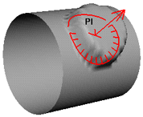
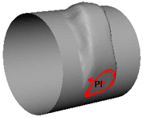
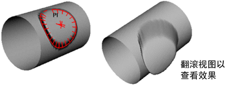
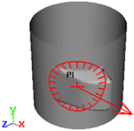
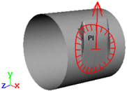
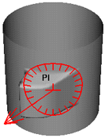
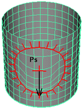
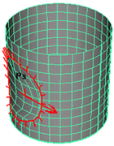

单击“曲线/曲面”(Curves/Surfaces)工具架上的  时，在“工具设置”(Tool Settings)窗口中将显示以下选项。
时，在“工具设置”(Tool Settings)窗口中将显示以下选项。
笔刷(Brush)
有关“笔刷”(Brush)属性的描述，请参见 Artisan 工具设置。
雕刻参数(Sculpt Parameters)
以下是“雕刻参数”(Sculpt Parameters)区域中属性的描述。
- 运算(Operation)
-
选择“推动”(Push)、“拉动”(Pull)、“平滑”(Smooth)、“松弛”(Relax)、“收缩”(Pinch)、“滑动”(Slide)或“擦除”(Erase)。笔刷图章内将显示一个字母，以反映操作：Ps（推动）、Pl（拉动）、Sm（平滑）、Re（松弛）、Pn（收缩）、Sl（滑动）或 E（擦除）。
若要从移除笔刷图章中的字母，请打开“雕刻曲面工具设置”(Sculpt Surface Tool Settings)窗口，单击“显示”(Display)区域，并禁用“显示笔刷反馈”(Draw Brush Feedback)。
当“操作”(Operation)设定为“平滑”(Smooth)时，将考虑“最大置换”(Max Displacement)和“引用向量”(Reference Vector) (X, Y, Z) 选项。即：平滑将根据设定的“引用向量”(Reference Vector)选项受约束，且受限于“最大置换”(Max Displacement)值。
提示： 若要从标记菜单中选择笔刷操作，请按住 U 键并单击。 - 自动平滑(Auto smooth)
-
启用“自动平滑”(Auto Smooth)时，如果使用“推动”(Push)或“拉动”(Pull)雕刻操作，则每个笔刷笔划的曲面会自动平滑。平滑量取决于“平滑强度”(Smooth Strength)值。“自动平滑”(Auto Smooth)选项仅在选择“推动”(Push)或“拉动”(Pull)雕刻操作时才可用。
- 平滑强度(Smooth strength)
-
为执行的每个“推动”(Push)、“拉动”(Pull)或“平滑”(Smooth)笔划指定应用于曲面的“雕刻曲面工具”(Sculpt Surface Tool)的平滑量。“平滑强度”(Smooth Strength)值的范围为 1 至 10。输入的“平滑强度”(Smooth Strength)值越大，每一笔刷笔划发生的平滑越多。
- 笔刷强度(Brush strength)
-
确定选定的雕刻曲面工具对执行的每个笔划曲面有多少影响。“笔刷强度”(Brush Strength)值范围从 1 到 100。输入的值越大，工具对每个笔刷笔划的影响越多。仅当选定“滑动”(Slide)或“收缩”(Pinch)雕刻操作时，此选项才可用。
- 引用向量(Reference vector)
-
在“雕刻参数”(Sculpt Parameters)区域中，选择“引用向量”(Reference Vector)。“引用向量”(Reference Vector)控制推动或拉动时顶点移动的方向。笔刷箭头表示引用向量。
- 法线(Normal)
-
顶点朝曲面法线的方向移动。
 - 第一条法线(First normal)
-
顶点朝曲面法线在笔划开始处建立的方向移动。
 - 视图(View)
-
顶点朝与摄影机视图方向平行的方向移动。
 - X 轴(X Axis)
-
顶点仅朝 X 轴的方向移动。它们不会沿 Y 轴或 Z 轴移动。
 - Y 轴(Y Axis)
-
顶点仅朝 Y 轴的方向移动。它们不会沿 X 轴或 Z 轴移动。
 - Z 轴(Z Axis)
-
顶点仅朝 Z 轴的方向移动。它们不会沿 X 轴或 Y 轴移动。
 - U 向(U)
-
雕刻 NURBS 曲面时，朝 U 向等参线的方向 U 向移动 CV。
 - V 向(V)
-
雕刻 NURBS 曲面时，朝 V 向等参线的方向 V 向移动 CV。
提示：若要避免沿 NURBS 曲面的 U 向或 V 向等参线雕刻时重叠等参线，请使用更软的笔刷形状和较小的置换。
- 最大置换(Max displacement)
-
键入笔刷笔划可能的最大深度或高度，或使用滑块选择它。（笔刷笔划的实际置换取决于使用光笔按时的硬度和不透明度值）。
- 接缝/极点容差(Seam/Pole tolerance)
-
设定顶点必须如何沿一条边接近、边在同一曲面中必须如何彼此接近，这样才能检测为公用边。它通常用于检测球体等曲面上的极点。
- 整体应用(Flood)
-
将“操作”(Operation)应用于所有选定的控制顶点。
- 当“操作”(Operation)为“推动”(Push)或“拉动”(Pull)时，“整体应用”(Flood)将最大置换应用于所有选定的控制顶点。
- 当“操作”(Operation)为“平滑”(Smooth)时，“整体应用”(Flood)将平滑所有选定的控制顶点。
- 当“操作”(Operation)为“擦除”(Erase)时，选定的控制顶点将还原到上次保存的状态。
- 引用曲面(Reference Surface)
-
若要在每一笔划后自动“烘焙”或更新曲面，请启用“每一笔划后更新”(Update on each Stroke)。有关引用曲面的描述，请参见引用曲面。若要手动更新引用曲面，请单击“更新”(Update)。
提示： 当“操作”(Operation)为“滑动”(Slide)时，禁用“每一笔划后更新”(Update on each stroke)。 - 擦除曲面(Erase Surface)
-
若要在每一笔划后自动更新擦除曲面，请启用“擦除曲面 > 每一笔划后更新”(Erase Surface > Update on each Stroke)。若要手动更新擦除曲面，请单击“更新”(Update)。